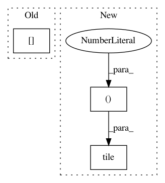

5dd5b8652f28426322309c4e983c94a3caa8fa8e,libact/query_strategies/variance_reduction.py,VarianceReduction,A,#VarianceReduction#,19
Before Change
grad[i*label_count+j] *= (1-pi[c]) * x[i]
//grad.append(pi[c] * (1-pi[c]) * x[i])
else:
grad[i*label_count+j] *= (-pi[j]) * x[i]
//grad.append(-pi[c] * pi[j] * x[i])
//grad = np.array(grad)
//print(np.shape(grad))
After Change
_pi = -1 * np.array(pi)
_pi[c] += 1
grad = pi[c] * np.tile(np.array([x]).T, (1, label_count)) *\
np.tile(np.array([_pi]), (feature_count, 1))
grad = grad.reshape((feature_count*label_count))
return np.dot(grad.T, grad)
In pattern: SUPERPATTERN
Frequency: 3
Non-data size: 3
Instances
Project Name: ntucllab/libact
Commit Name: 5dd5b8652f28426322309c4e983c94a3caa8fa8e
Time: 2014-12-19
Author: yangarbiter@gmail.com
File Name: libact/query_strategies/variance_reduction.py
Class Name: VarianceReduction
Method Name: A
Project Name: ntucllab/libact
Commit Name: c57ce7f891a91592354b1685d37f2aee39f193f2
Time: 2015-10-07
Author: yangarbiter@gmail.com
File Name: libact/query_strategies/active_learning_by_learning.py
Class Name: Exp4P
Method Name: exp4p
Project Name: rail-berkeley/softlearning
Commit Name: f8df44a7c24038d0fa3d7b0f7dc2d8c5e952c81a
Time: 2019-02-01
Author: hartikainen@berkeley.edu
File Name: softlearning/algorithms/sql.py
Class Name: SQL
Method Name: _create_svgd_update